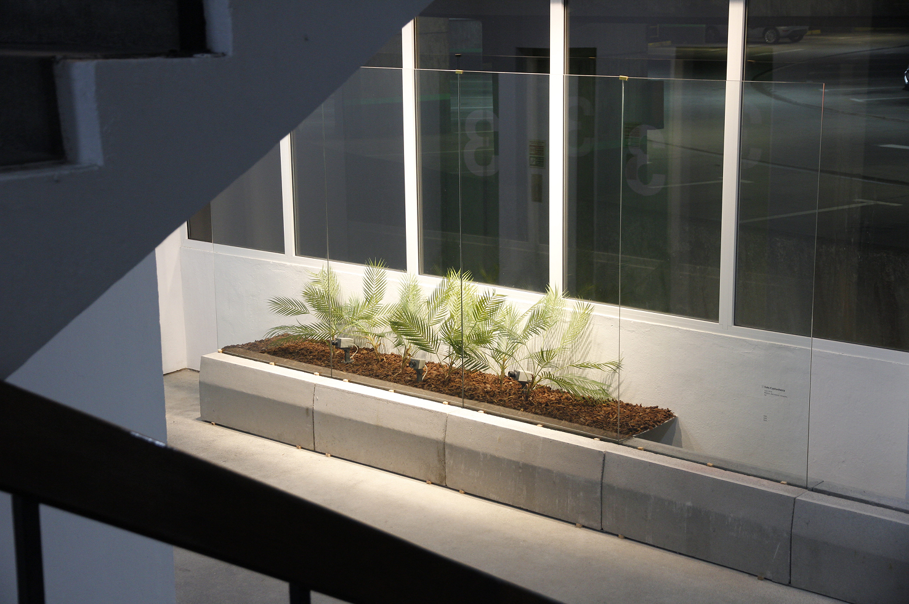
A space of connection between civilization and nature, dedicated to
the fruition and contemplation. It is an encouragement for
meditation, but also an area for the community. The garden acquires
different meanings and functions. It defines areas of action and
thought that can be considered a scenery of the Second Life – an
idealized image of the world. It is evidence of a culture, style and
time, which is representative of society. In
The exhibition is a proposal that expresses - like in the definition of a garden - the intention of playing with the matter of space and of ‘being’, experience and fruition – a feeling of tranquillity and relaxation after getting freed from the anxiety or anguish. Eight authors, who were distributed throughout the seven floors of Galeria Vertical do Silo Auto, developed an interpretation of the ‘modern’ garden in its diverse configurations and adapted to the context of the 21st century – the predicates of Alvin Toffler in the 70s. The exhibited artworks emerge in the relationship of the authors with the area, represented in different topologies, living off of personal archaeology of the park and the ‘garden’. Everything is a constant outburst of information without any sort of filter – a reflection of a society of information, and procedures that correspond to our current experience and from our surroundings, from the way we process the information that we search for and the one that it is deliberately offered to us. In Future Shock, Toffler voices his worries about the possible structural changes to the modern society, which are in accordance with the acceleration and development of technology. Toffler predicts the overload of Man towards this evolution and his consequent disorientation. These questions provoke the reflection of a new utopia, a thought that is revivalist and obviously lives off the deterioration of the concepts of society and community – and the gardens appear as an area for intervention.
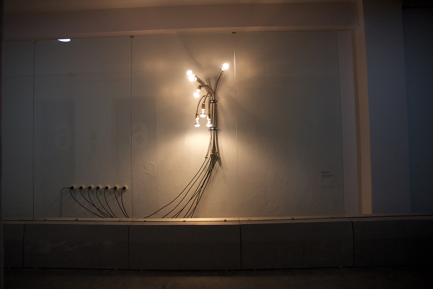
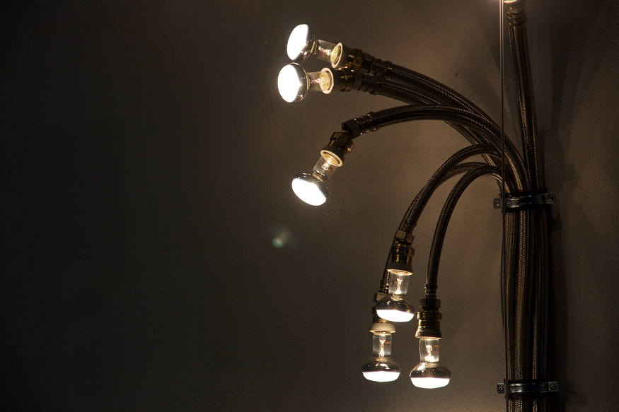
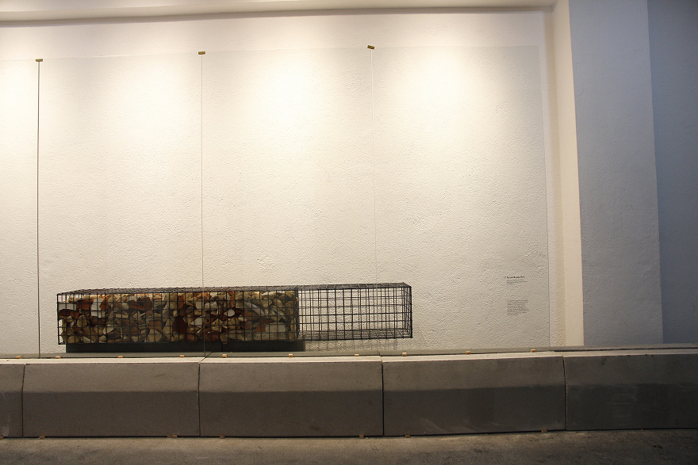
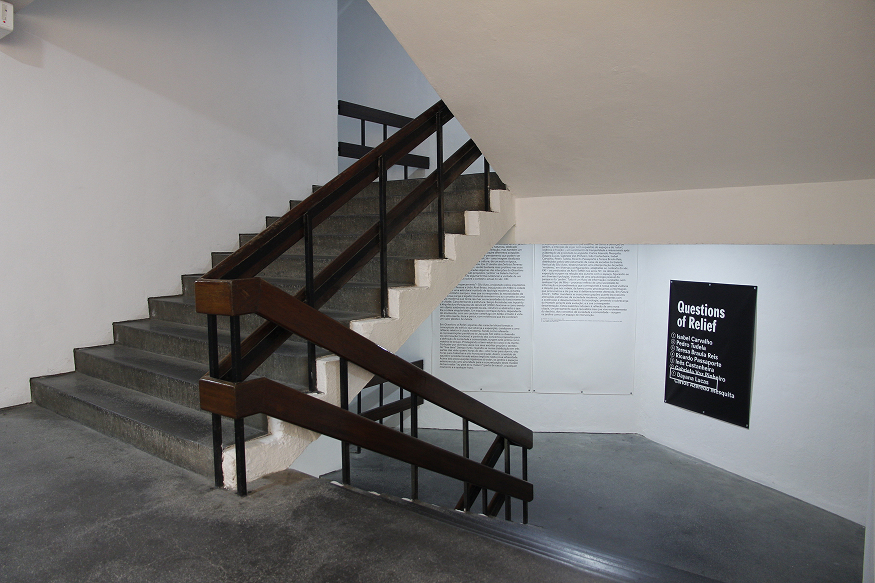
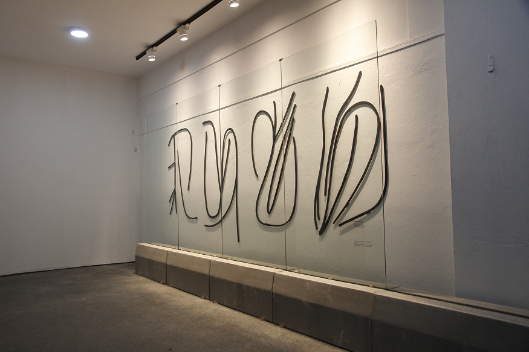
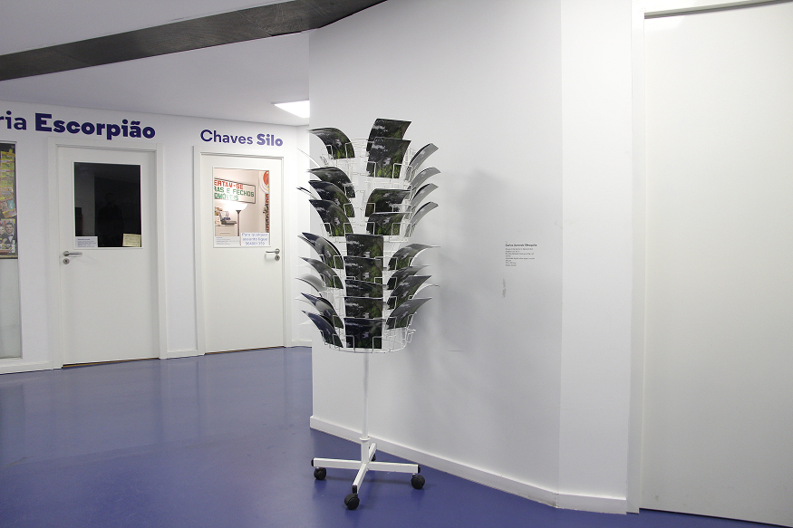
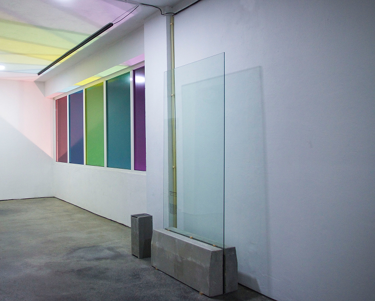
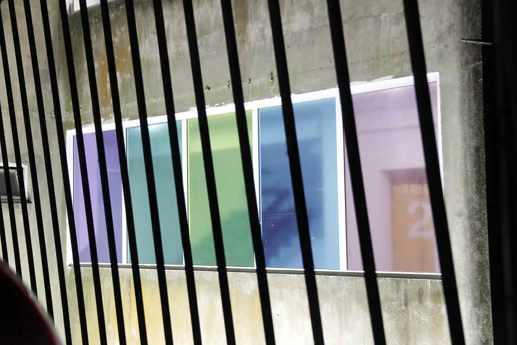
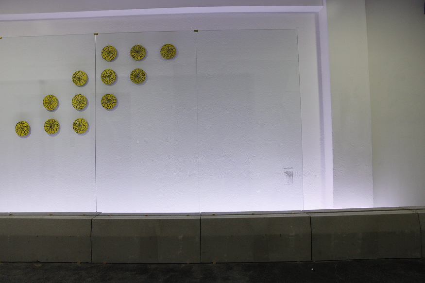
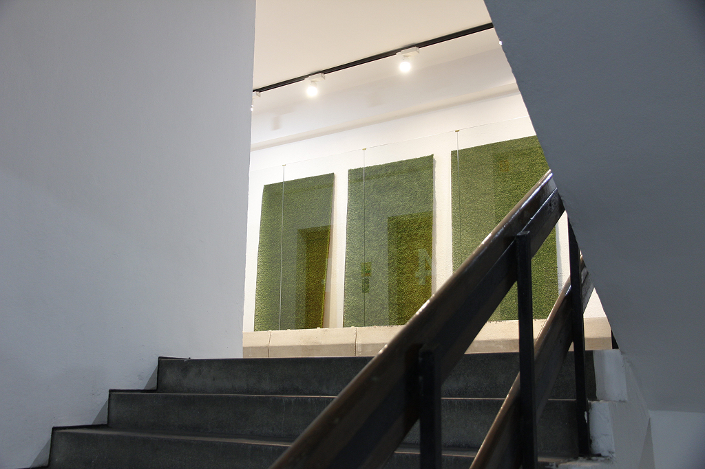
Galeria Vertical Silo Auto, Porto
26.12.2016 — 16.3.2017
Porto Lazer – Cláudia Melo
Luís Pinto Nunes,
Luís Albuquerque Pinho
Paula Pinho
Márcia Novais
Pedro Silva
Carlos Azeredo Mesquita,
Dayana Lucas,
Gabriela Vaz-Pinheiro,
Inês Castanheira,
Isabel Carvalho,
Pedro Tudela,
Ricardo
Passaporte,
Teresa Braula Reis